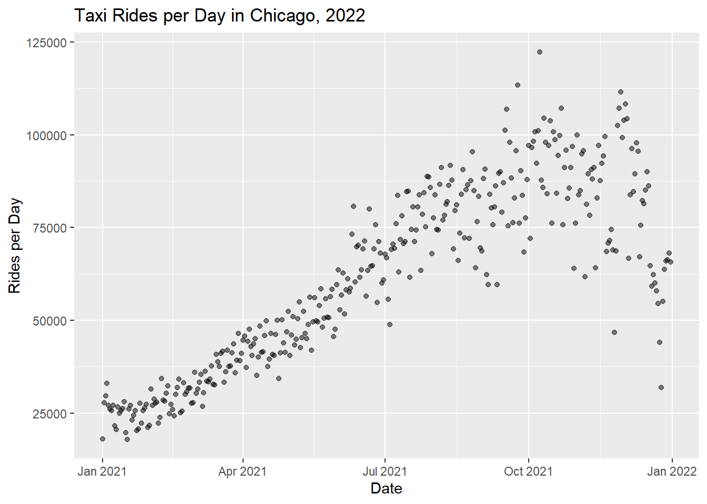
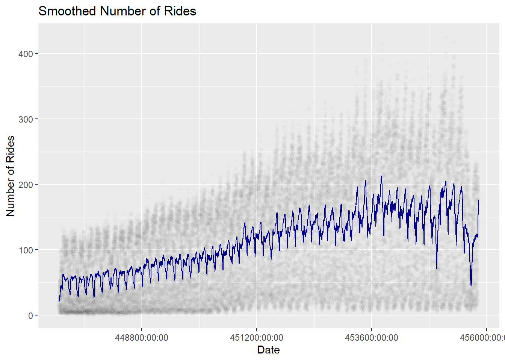
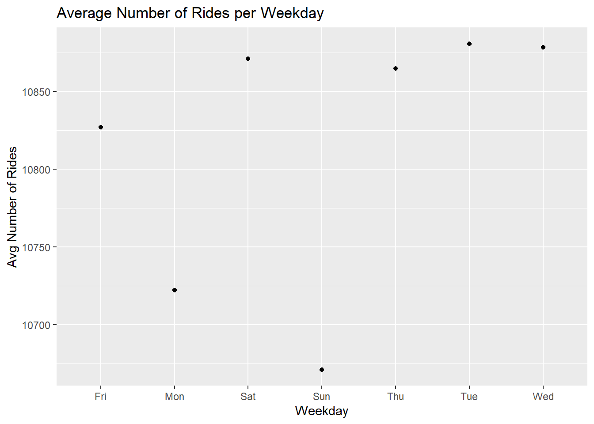
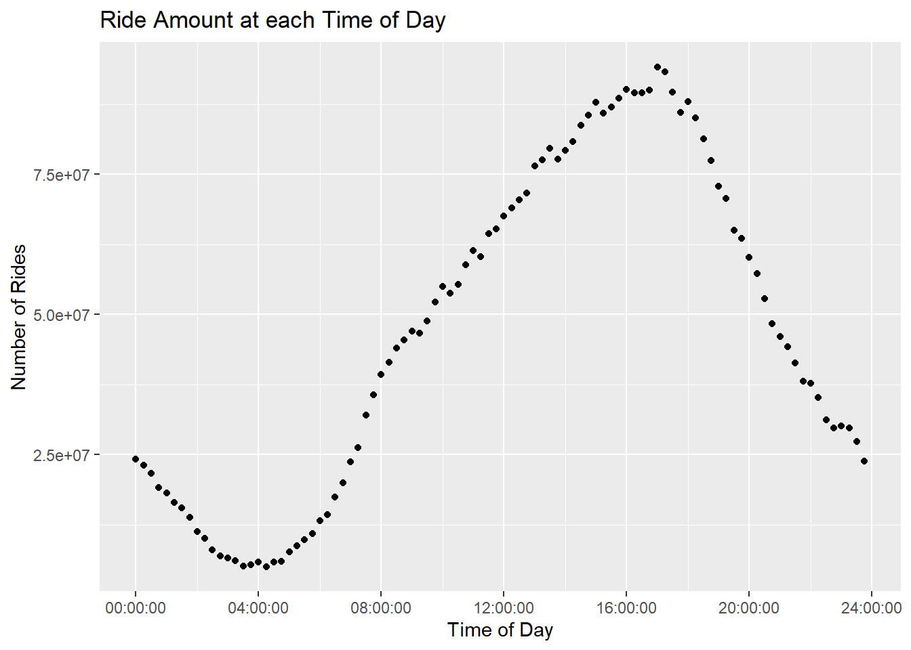
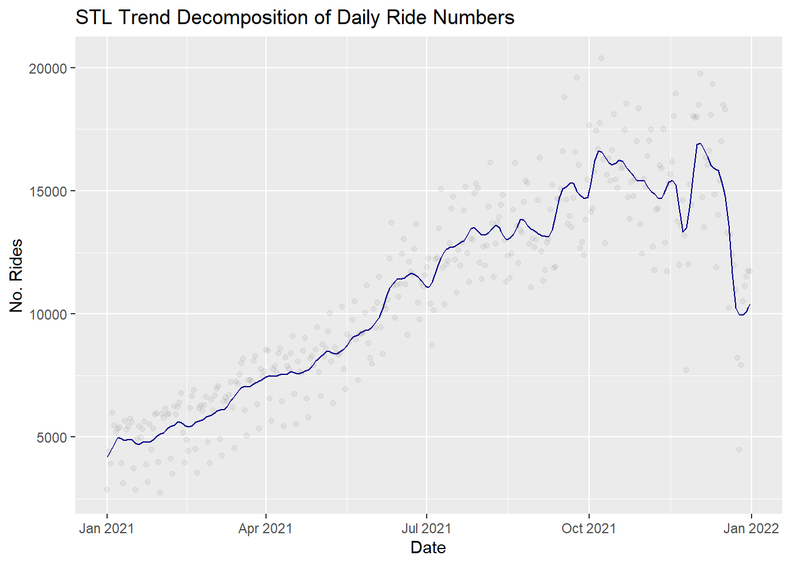
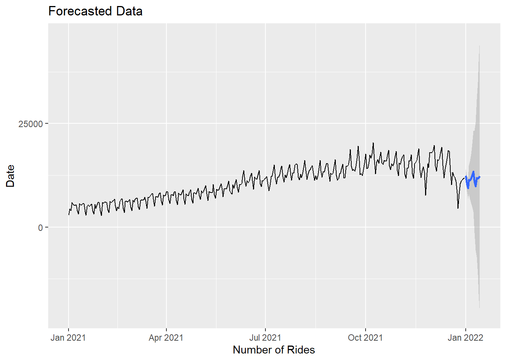
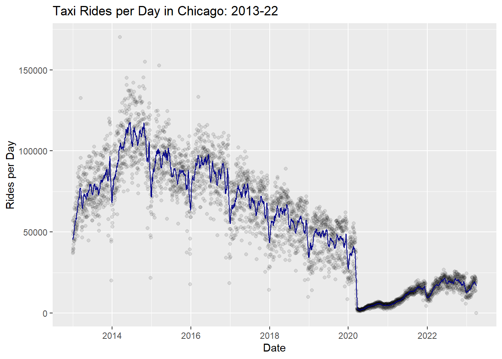
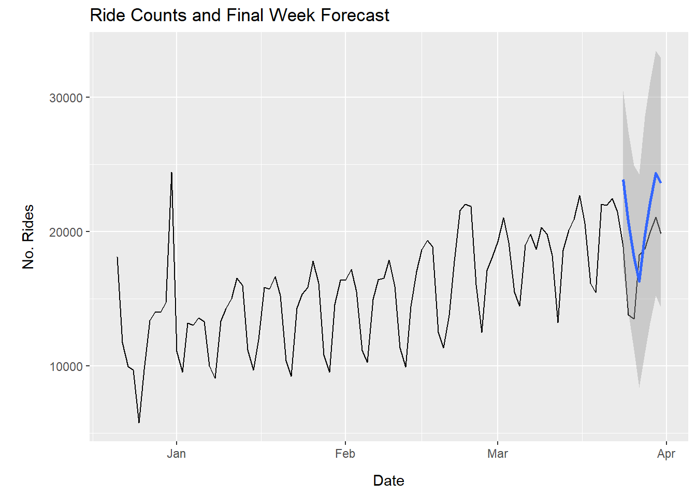

6 Chicago Taxi Demand Estimation
6.1 Introduction
Demand estimation is an important topic for businesses of any kind: accurate demand forecasts can allow them to operate on higher margins while poor forecasts risk either disappointing clients due to a lack of supply or saddling the business with excessive or labor without a buyer for the product. While the input for the taxi market is just labor, the analysis is no different. Fortunately, the City of Chicago has a dataset where they release data on the time rounded to the nearest quarter hour, location, and duration of literally every taxi ride in the city (or at least that’s what they say). This dataset allows us to do fairly robust demand estimation due to its granularity. The most important decision for a taxi decision for a taxi firm is a) when to hire more drivers, and b) when to schedule more drivers. To this end, I will be doing both seasonal and daily trend predictions. Unfortunately, observed quantity is endogenous. Attempts to supply more taxis within the data period will increase observed quantity (which I might erroneously interpret as increased demand): fortunatley, the data allows reparametrizations that decrease these concerns which I will explore at the end.
6.1.1 Data
The dataset provided by the City of Chicago is quite robust in that it appears to be quite clean already. The problem is that each row is an individual ride and the timespan of the dataset is 2002 to present. Chicago is a big city with a lot of people and a substantial number of taxis. The resulting dataset has over 200 million observations. My computer is puny and even SQL queries to a local server are very slow. So, I’ll be first analyzing 2022 data as an outline of our methods and approaches and then extend this analysis and restimate models with multiple years later. The dataset also allows multiple ways to estimate demand. Ride data comes with length, time, and fare data which might allow us to create a more accurate picture of demand. For the first part, we will use count data, but then diversify to other types of demand measures later.
6.1.2 Trends
There is multiple levels on which one can examine demand in this dataset. The most trivial would be to examine raw number of rides within a timespan.

There are already some interesting trends in this data at first glance. For one, there is a solid trend upwards through most of the study period until around November at which point the demand seems to dip back down. Chicago gets very cold in winters and it makes sense that demand would be negatively affected during that period. However, demand does not seem to achieve the lows that it did at the start of the previous year which would suggest long term growth in the demand for taxis. From a technical perspective, the demand is definitely not stationary and is looking like it might not even be first-difference stationary. On a slightly different topic, the variance of the measurements increase as the year goes on which has two separate implications: OLS isn’t going to be enough here. If we wanted to use regression we would need something like a quasi-likelihood model that controls for heteroskedasicity in order to get meaningful confidence intervals. Secondly, if we want to use some sort of exponential smoothing model, the increased variance suggests that the right approach is to use one with multiplicative trends as opposed to additive ones (more on this later).
The next important question is what kind of seasonality is there in this data. We’ll address year seasonality later, but right now we can visualize daily and weekly seasonality already present in the data.

The previous graph shows a 100 tap moving average filter that is fitted to demand measurements at the lowest granualarity: counts of rides numbers in 15 minute bins supplied in the dataset. The distinct peaks that we can see correspond to weeklong periods. Plotting average number of rides by weekday gives the following graph:

If you look on the y axis, the differences between low volume days and high volume days is only 10% or so, but this is still enough to create a noticeable seasonal trend that shows up in the weighted average.
There are also clear seasonal trends across days in the day that look roughly similar to a sine wave. We can group data by time of day (without controlling for anything else) and get the following visualization:

This isn’t quite sinusoidal, but it’s close, and it’s about what we would expect if demand was a smooth function of time of day. Note that, once again linear regression isn’t an appropriate choice here. Even polynomial regression is undesirable as the Taylor series of a sine wave converges rather slowly on the boundary of a compact interval centered on the point of expansion compared to the center of the set which results in more parameters than necessary.
Not to spoil the fun, but there are going to be seasonal yearly trends in this dataset too which complicate our ability to apply simple estimation procedures.
6.1.3 Possible Estimation Procedures
Not to beat a dead horse here, but our data is not stationary. Applying a KPSS test with a null hypothesis that the data is trend stationary gives a significant p-value. One of the primary reasons for this seems to be the seasonality which we have a variety of ways to deal with.
##
## KPSS Test for Trend Stationarity
##
## data: as.numeric(daily_rides_2022$num_rides)
## KPSS Trend = 0.29748, Truncation lag parameter = 16, p-value = 0.01The basic approach to seasonal time-series modeling is to use some sort of moderately flexible exponential-smoothing/FIR model that has the ability to remove a seasonality or trend component specified by the researcher. SARIMA, Holt-Winters, and periodogram based approaches are all examples. The problem with all the previous approaches is that they only allow the specification of one seasonal component. Obviously, one could estimate seasonal components separately through use of some sort of restricted AR model and then use a standard estimation technique on the residuals. However, this approach is undesirable as having models with multiple levels are hard to debug and allow model error to more easily be propagated through residuals as opposed to estimating all the parameters simultaneously.
This means a more flexible model is needed in order to fit. One upside of our data is that we can be pretty sure that season periods are fixed. This means that flexible season length methods like STL aren’t strictly necessary, but it actually ends up to work pretty well here so that’s what we’re going to use.
The main challenge in working with this data is the nonconstant variance structure which limits the effectiveness of highly parametric methods and pushes us towards more flexible local methods. There are a few possible ways to deal with this issue. The easiest is to transform the data to create a more desirable variance structure: the most common transformation is obviously the logarithm where the compressive nature of the log pushes variances closer together (this also has the benefit of turning multiplicative relationships into additive ones). Taking the log actually works pretty well here and generates data that looks like it has normal errors but doesn’t necessarily mean that Holt-Winters performs well.
Another possible approach is to model the variance explicitly: the easiest method would be fitting some sort of quasi-likelihood model to the time series. However, we find this approach generally suspicious unless one has a prior that the variance conforms to a set structure. There also isn’t much literature on this approach and I don’t want to code a package that implements something like that…so there you go. Luckily, the dual approach to this is to use a method that is flexible enough to model the variance itself which is well studied and has a few good algorithms for time-series.
We’ve already spoiled that we’re choosing the third option and using STL to perform the trend/seasonality decomposition. So, let’s get to it.
6.1.4 STL Decomposition
One challenge with forecasting in the smaller context we’re operating in right now is that we don’t know if the dip down at the end of the period is a yearly seasonal effect or just an exogenous shock. There’s not a ton to do about this right now, but just be aware there’s some grains of salt to be had until we move to the full analysis.

As is easily apparent, the STL decomposition for the trend is pretty gritty, but that’s a benefit insomuch as it allows us to get a stable estimate of the seasonal component that changes relatively little over the course of the study period. Basically all modern time series procedures involve a decomposition of a series into trend-cycle, seasonal, and irregular elements and the estimation of those elements individually. STL gives me that decomposition that I can then play with in order to get a good approximation of the next few periods. The strategy is pretty simple. The last few samples of the seasonal decomposition give me an estimate of the trend-cycle at that point (this can be estimated using a constant or interpolating polynomials (I use interpolating loosely here), where I choose the latter). Seasonality can be estimated simply repeating the next few samples of what it would have been from the previous season and the irregularities can be estimated using a feedforward ARIMA design. A nice benefit of the ARIMA approach to estimating irregularities is that it preserves variance without transforming the data thus aiding in interprebility.
Here I present a ten day forecast for demand. You can also theoretically do the same procedure for hourly demand with a less flexible LOESS selection and day seasonality on top of week seasonality.
 Note that the confidence intervals are only the sum of the natural intervals from the ARIMA model and the prediction intervals from the interpolating polynomial (note that the constant residual variance assumption for the prediction intervals is approximately satisfied since we’re only pulling from a rough period near the end of the series).
Note that this specification doesn’t guard against model error and the projection would have done a very poor job of predicting the downturn if they had been taken a few weeks prior. In that sense, the confidence intervals are very optimistic (especially considering that we will see there is yearly seasonality that hasn’t been accounted for). However, they do provide an easy an decomposable heuristic for prediction which we will undertake in the next section with the whole data.
6.2 Full Data Procedures
The full data contains all taxi rides from 2013 to 2022 in Chicago and allows us to decompose year trends from trend-cycle data.

A few things are notable about the full data. For one, yearly seasonality is easy to observe in this context where demand peaks during the middle of the year and tapers off in the colder months (when it is perhaps understandable that people have less desire to be outside in the Chicago winter). Another important note is that the start of the coronavirus pandemic is easy to observe near the beginning of 2020 and has a clear effect on both the level and the variance of the data. Longer term trends in demand are also present in the data. Demand seems to rise between 2013 and 2015 while declining before the pandemic (perhaps due to greater competition from rideshare services or due to demographic trends in Chicago itself). It is also easy to observe a level effect on the variance that is most apparent in the summer months and post-Covid.
Given the our trend-cycle estimates come from STL which is a fairly flexible method, we really don’t need to modify the previous procedure except to add seasonality (besides that fact that I’m going to be waiting around a lot longer for my computer to plod through all the data). So, let’s do that.
Training is essentially identical and we get an STL decomposition, a trained ARIMA model, and a fitting procedure after all is said and done. Let’s see how the model forecasts the last week of the data compared to the actual data:

As can be seen, the estimation method tracks relatively well with the actual data. Obviously, much of this is owed to the relatively stable seasonality and the existence of a non-stochastic trend element. Nonetheless, this method is both easy to implement in many common statistical packages and is relatively easily interpreble given that there is an explicit decomposition in the method between the seasonal, trend-cycle, and irregular elements. This makes it easy to use and to extend.